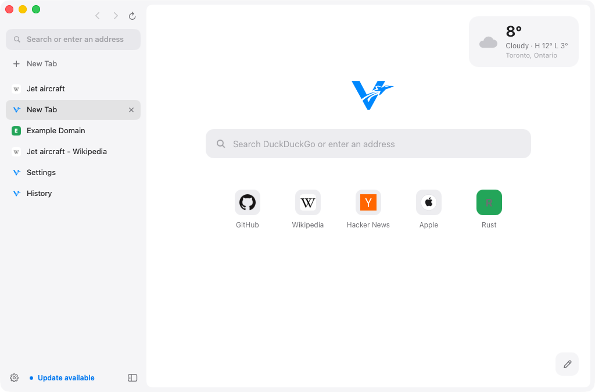

Native AppKit and Rust, on the WebKit already inside macOS. A 1.3 MB download that's on screen in a third of a second, with ads and trackers blocked before they load.

uBlock Origin's filter lists, defaults and filter syntax, compiled into WebKit's own content blocker. Nothing to install, and no extension running on every page.
Network filters become WebKit rules that stop requests before they leave your Mac. Cosmetic filters, procedural filters and scriptlets clean up what's left on the page.
Measured on GitHub's Apple Silicon build machines every time Volant is built, with the same five pages open in each browser.
Seconds. Shorter is better.
Megabytes on disk. Smaller is better.
Megabytes, all processes. Lower is better.
Volant draws pages with the same engine as Safari, so page loading and JavaScript run at Safari's speed and memory lands in Safari's range. How it's measured.
The whole browser around the page is written from scratch in Rust; its only libraries are the bindings that let Rust talk to macOS. The page itself is drawn by the WebKit that already ships with every Mac.
Zero dependencies in the engine pieces, fuzzed with 110,000 random inputs.
The parts a single project shouldn't reinvent.
Flat and calm: no borders, no shadows, no gradients. Just your pages, and a sidebar that stays out of the way.
uBlock Origin's filters compiled into WebKit's own rules, with a shield for every site.
Any article without the clutter, set in New York, on Volant's own HTML parser.
Tabs you haven't looked at in a while give their memory back, and wake when you return.
Addresses, searches, history and open tabs in one field, with instant completion.
One click installs a new build, checks its signature, and reopens with your tabs.
No accounts, no sync, no telemetry. Nothing leaves your Mac but the pages you visit.